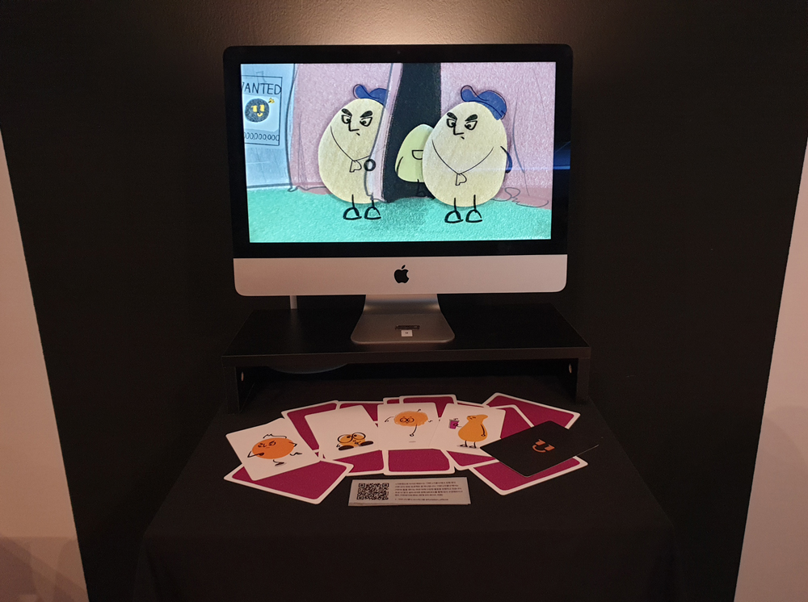

기부랜드에 어서오세요!
수상함을 감지하고 기부랜드로 떠난 기부니 친구들!
기부랜드에 도착한 기부니 친구들은 위험에 빠지고 마는데..
<기부랜드에 어서오세요!>는 스타트업 '기부니가좋다'의 서비스 광고 영상으로, '기부니가좋다'에서 실행하고 있는 기부 인식 변화 프로젝트의 일환이다. 점점 기부에 무관심해져가는 MZ세대들도 어릴적 언젠가는 남을 돕는 착한 마음이 있었다는 배경으로부터 '유치한, 과장된, 동심의' 세 가지 디자인 컨셉을 도출하였고, 그에 따라 2D 카툰 애니메이션 방식을 취한다. '기부는 믿을 수 없고 재미없다'는 기존 인식의 틀에서 벗어난다는 지향점을 비주얼 모티프로 삼아 면과 선을 분리한 그래픽 스타일을 추구한다. 또한 후반으로 갈수록 어둡고 불명확한 공간과 비비드하고 대비되는 컬러로 수상함을 더해 기부랜드를 에버랜드 같으면서도 강원랜드 같은 공간으로 연출하였다.
김재완 wodhks6561@gmail.com
